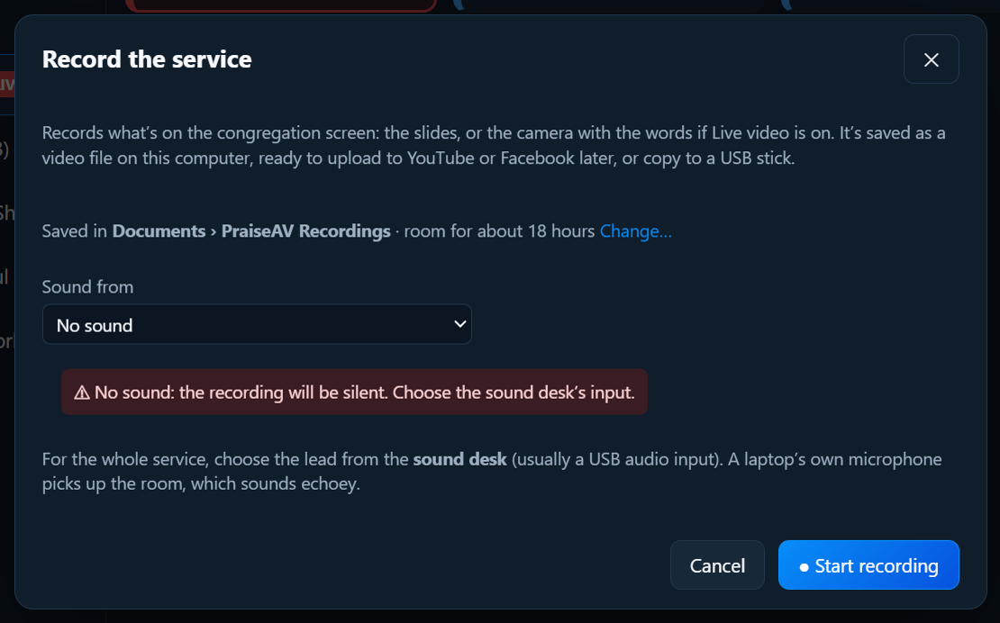

Screens and livestream
Recording the service
If your church can’t livestream (no internet, or nobody to run it), PraiseAV can record the service to a video file. Upload it to YouTube or Facebook afterwards, or share it with people who couldn’t come.
It records what’s on the congregation screen: the slides, or with Live video on, the camera with the words over it. Congregation alerts are left out: a child’s number called from the crèche, or a scrolling notice, shows in the room but never in the recording (see Congregation alerts).
Recording
Click ● Record at the top of PraiseAV.

Choose where the sound comes from:
- The sound desk: the best. Run a lead from the desk into the computer, usually through a small USB audio interface (see Hardware), and choose it here.
- This computer’s sound: only PraiseAV’s own videos and music, not the people speaking or singing.
- A microphone: works, but a laptop’s microphone hears the room and sounds echoey. With an input chosen, a sound meter moves when sound comes in, and says ✓ Sound is coming in. If it stays still, check the lead and that the desk is sending to it. With No sound, PraiseAV warns that the recording will be silent.
Click ● Start recording.
The button shows ■ REC and the time while it records. Click it, then ■ Stop and save in the question below it. (It keeps recording while it asks.)
The file is named with the date and the service. Click Show the file in the message to open the folder.
Where recordings go
Recordings are saved in Documents › PraiseAV Recordings unless you choose another folder. An hour takes about 3 GB, so a small laptop drive fills up in a few months. The Record window shows where they're going and how much room is left (for example room for about 40 hours).
- Change… chooses another folder: a bigger drive, or an external hard drive or large USB drive kept plugged in for recordings. Use Documents again goes back.
- Nearly full? The Record window warns when there's room for less than about two hours. Copy old recordings off (or delete ones already uploaded to YouTube), or choose a bigger drive.
- The external drive isn't plugged in? The Record window says so, and the service is still recorded, in Documents › PraiseAV Recordings, so nothing is missed. Copy it across later.
- Full, or unplugged while recording? The REC button says not saving! and a message says what happened. What was recorded until then is kept.
The folder is remembered on this computer only, because drive letters differ between computers. Recordings on this computer, in the Record window, lists the latest from both places.
Sound and picture in step
A camera's picture reaches PraiseAV a little after the sound desk's sound: a USB webcam about a tenth of a second, a phone over the Wi-Fi up to half a second. In a recording, lips would move after the words. So PraiseAV holds the sound back by the right amount for whichever camera is on screen, and changes it when you cut to another camera.
Measure each camera once. Click Sync… in Live video (or Sound and picture in step… in Record):
- Phones measure themselves. The phone lines its clock up with the computer's, and each picture says when it was taken. Click Use this beside the measured time.
- Test sync (for any camera that can see the projector screen): the screen flashes white three times while the computer beeps. The beep needs to reach the sound desk, or the room speakers so the microphones hear it. PraiseAV finds the flashes and beeps in a short test clip, measures the gap, and saves it.
- Clap test (for a camera that can't see the screen): clap three times where the camera can see your hands. Play it back and slide until each clap's sound lands as the hands meet. Then save.
It's remembered on this computer, so it only needs doing again if a camera changes.
Copying it to a USB stick
The recording is always saved on this computer first. Then copy it to a USB stick, so if the stick fails or is pulled out, nothing is lost.
- Plug in the USB stick.
- In the message after recording, click Copy to USB stick. (Or later: ● Record lists the last few recordings, each with Copy to USB stick.)
- Wait for ✓ Copied … and checked. Safe to take the stick out. PraiseAV reads the copy back from the stick to make sure it's complete.
It goes in a PraiseAV Recordings folder on the stick. If the stick is too full, PraiseAV says how much space it needs.
Good to know
- The recording is an MP4 file at the projector’s size (usually 1920 × 1080), which YouTube and Facebook accept as it is.
- It’s saved a few seconds at a time, so a power cut loses only the last few seconds.
- If the congregation screen closes (the projector is unplugged, or Hide is pressed), the recording stops and is saved.
- The laptop doesn’t sleep while it’s recording. Plug it in: an hour’s recording uses a lot of battery.
- An hour is about 2.5 GB. Make sure there’s space on the computer.
With an ATEM Mini
If you have an ATEM Mini Pro, it can record too (● Record next to Go live): see Livestream and ATEM.